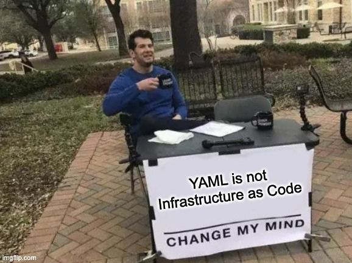

Building Serverless Applications that use various cloud resources can be tricky. Depending on the cloud provider, various tools can be used to develop, test and deploy serverless applications. This post focuses on some of the serverless tools that are out there and how they can solve individual problems.
We will be discussing features of SAM (Serverless Application Model), Serverless Framework, CDK, and Serverless Stack and see how each of them helps to develop serverless applications in different ways.
Serverless Application Model (SAM)
Even though you can deploy most of the resources on AWS with CloudFormation, for things specific to Serverless, it can be tedious. Serverless Application Model or in short SAM is an abstraction on top of CloudFormation to simplify serverless deployments. SAM CLI makes local development, testing, and debugging easy. With the introduction of SAM Accelerate (On public preview as of Nov 2021), it now allows to faster local development with instant synchronization of infrastructure changes from the local environment.
For CI/CD, SAM Pipeline integrates with AWS CodePipeline or Third Party Tools like GitHub Actions to automate the deployment process. You can read more about it on our blog post CI/CD deployment with AWS SAM Pipeline Using GitHub Actions
Serverless Framework (SLS)
If you are looking for an open-source and cloud agnostic-ish version of SAM, Serverless Framework is the tool for you. For AWS, it works similar to SAM and translates its syntax to CloudFormation. This would be a better choice when you are working with multiple cloud providers like AWS, GCP, or Azure since the learning and syntax remain almost the same across them. But keep in mind that, you would still be required to have some cloud-specific configurations to switch between cloud providers.
Another advantage of Serverless Framework is that it has a plugin ecosystem that helps to accelerate the development process with reusable patterns and extensions. In the case of AWS, it can also be extended with plain CloudFormation to deploy non-serverless resources on the same configuration file.
You can also check out Easy Serverless Deployment using Serverless Framework & Github Actions, Automate Rollback of Serverless app with AWS [CodeDeploy](https://www.antstack.com/blog/automate-serverless-app-rollbacks-with-codedeploy-and-sls/) and Serverless Framework for more content related to Serverless Framework.
But.

Serverless is all about empowering developers with capabilities to deploy cloud resources. If they have to learn a new configuration language to deploy resources, then that purpose is not met. If we can deploy cloud resources with the same language as your business logic, then it makes it developers easy to adapt to serverless.
Cloud Development Kit (CDK)
CDK allows to create and deploy AWS resources using the most used programming languages like JavaScript, TypeScript, Python, Java, and C#. This enables us to use the benefits of code reusability to create AWS Resources and has test cases for them. If we were to use CDK with TypeScript, then all of the Frontend, Backend teams would be using one language to develop the whole application. CDK like every other AWS Deployment Mechanism translates to CloudFormation. So, if there is any configuration/service that doesn't support by CDK, it can still be configured with the help of CloudFormation.
The main advantage of using CDK is constructs. Constructs AKA Patterns on CDK helps developers define a common set of use cases, the connection between resources, and use them across projects. These can be defined at the organization level so that any developer can use them in their projects, which allows enforcing best practices, code reusability, and less turnaround time. There are also open source constructs available to use. You could find them on Constructs Hub.
One of the problems with CDK is local development. Any changes you do for resources or business logic have to be deployed from your machine to see them in effect/debug. There are ways to make the local development work with SAM CLI / Docker, but the steps involved are not straightforward.
For setting up automatic deployment pipelines, CDK has come up with a new feature called CDK Pipelines, which enables us to create a self-mutating pipeline along with our resources.
Serverless Stack (SST)
Serverless Stack is an open source framework to solve the problems with tools like CDK, help in local development and debugging as well as support reusable patterns specific to serverless. With similar syntax like CDK, it tries to bring in more readability and has predefined patterns like REST API, GraphQL API, React Deployment, and Authentication.
SST has Live Lambda Development, which enables the developers to save the lambda code on their code editor and test the API endpoints almost immediately. If you are using VS Code, then SST could also be extended to use breakpoints for debugging. SST comes with mocking capabilities for writing unit tests for infrastructure deployment.
Conclusion
With more and more companies trying to adopt Serverless, more and more companies, cloud providers are coming up with tools to simplify serverless development and deployment. Since most of the tools are under active development, so there is scope for a lot of new features coming our way for serverless development. It is important to consider the resources you are going to deploy, the cloud provider, integration with CI/CD services you are using, and what is the main problem with your current deployment process before deciding on what tool to use.
This post was originally published on AntStack's Blog.